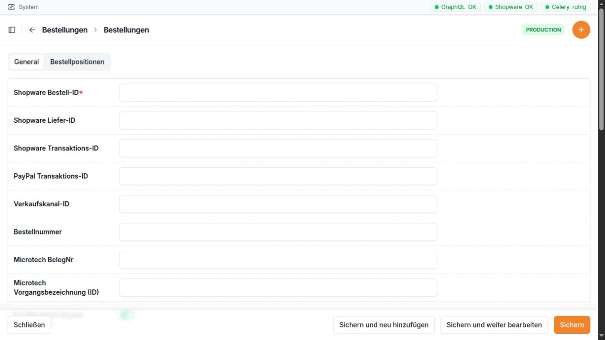

Bestellungen¶
Wofür ist dieser Bereich da?¶
Im Bereich Bestellungen sehen Sie Bestellungen aus Shopware. Sie können offene Bestellungen neu einlesen, den aktuellen Stand von Bestellung, Zahlung und Lieferung prüfen, eine Bestellung nach Microtech übertragen und bei Bedarf einen Zoll-Export erstellen.
Wichtig: Eine neue Bestellung wird nicht allein durch das Einlesen automatisch nach Microtech übertragen. Dafür gibt es die eigene Aktion In Microtech anlegen.


Die Bestellmaske beginnt mit den Kennungen aus Shopware und Microtech. Viele dieser Werte werden beim Einlesen automatisch gefüllt.
Die Bestellliste¶
In der Liste werden 20 Bestellungen pro Seite angezeigt. Neue Bestellungen stehen normalerweise oben.
Spalte |
Einfache Erklärung |
|---|---|
Bestellnummer |
Die für Mitarbeitende lesbare Bestellnummer aus Shopware. |
Kunde |
Zeigt die AdrNr und den Namen. Ein Zusatz kennzeichnet Inland, Ausland · EU, Ausland oder Unbekannt. |
Land |
Zeigt Flagge und Ländercode der bevorzugten Rechnungsanschrift, sonst der Lieferanschrift. |
Verknüpfung |
Zwei Hinweise zeigen, ob die Standardadressen fachlich zugeordnet und zwischen Shopware und Microtech eindeutig verknüpft sind. Grün bedeutet in Ordnung. Gelb bedeutet, dass etwas geprüft werden sollte. |
Bestelldatum |
Datum und Uhrzeit der Bestellung. |
Bestellstatus |
Der aktuelle Status aus Shopware. |
Microtech-Sync |
Stand der letzten Übertragung nach Microtech. Ohne bisherigen Lauf steht hier ein Strich. |
Die Suche findet Bestellungen über Bestellnummer, Shopware-Bestell-ID, Microtech-Belegnummer, Microtech-Vorgangsbezeichnung, PayPal-Transaktionsnummer sowie über AdrNr, Kundenname, Kunden-E-Mail, Vorname oder Nachname in einer Kundenadresse.
Die Filter am rechten Rand grenzen die Liste ein nach:
Bestellstatus
Zahlstatus
Versandstatus
Freigabe für den Microtech-Export
Bestelldatum
Anlagedatum in der GC-Bridge
Aufgeklappte Bestellzeile¶
Beim Aufklappen einer Bestellung erscheint eine kompakte Übersicht:
Status: Bestellung, Zahlung und Lieferung. Über die Auswahl kann ein erlaubter nächster Shopware-Status gesetzt werden.
Übergänge aktualisieren: lädt die derzeit erlaubten Statuswechsel neu aus Shopware.
Microtech-Sync: zeigt den laufenden oder letzten Zustand sowie die Microtech-Belegnummer. Bei einem laufenden Vorgang aktualisiert sich die Anzeige selbst.
Zahlungsreferenz: zeigt AdrNr und PayPal-Transaktionsnummer.
Rechnungsanschrift und Lieferanschrift: zeigen die zur Bestellung gespeicherten Anschriften.
Ein Statuswechsel wirkt direkt in Shopware. Fehlt die passende Shopware-ID, ist die Auswahl nicht verfügbar. Bleibt ein Statusfeld leer oder zeigt keine Möglichkeit an, zuerst Übergänge aktualisieren wählen.
Aktionen in der Bestellliste¶
Aktion |
Wirkung |
Wichtiger Hinweis |
|---|---|---|
Offene Bestellungen von Shopware synchronisieren |
Liest offene Bestellungen, Kunden, Anschriften und Positionen aus Shopware ein. Neu eingelesene offene Bestellungen werden in Shopware auf In Bearbeitung gesetzt. |
Die Rückmeldung nennt gesehene, neue, aktualisierte und fehlerhafte Bestellungen. Eine Auswahl einzelner Zeilen ist für die eigentliche Ge samtsynchronisierung nicht nötig. |
Kunden zusammenführen |
Öffnet den Kundenabgleich mit der AdrNr der Bestellung. |
Nur verfügbar, wenn die Bestellung eine AdrNr hat. |
Regeln testen |
Zeigt eine Vorschau der Regeln für Kunde, Lieferanschrift, Rechnungsanschrift und Vorgang. |
Die Vorschau speichert nichts und startet keine Übertragung. |
In Microtech anlegen |
Startet oder setzt die Übertragung dieser Bestellung nach Microtech fort. |
Die Übertragung läuft schrittweise im Hintergrund. Der Status in der aufgeklappten Zeile zeigt den Fortschritt. |
Zoll-CSV |
Erstellt eine CSV-Datei für den Schweiz-Zoll. |
Benötigt Bestellpositionen, eine aktuelle M icrotech-Belegnummer und eine eingerichtete Feldzuordnung. |
Kopieren |
Legt einen neuen Datensatz mit übernommenen Werten an. |
Bei importierten Bestellungen normalerweise nicht verwenden; Kennungen müssen eindeutig bleiben. |
Löschen |
Löscht die Bestellung nach einer Bestätigung. |
Dadurch wird auch die interne Verlaufshistorie dieser Bestellung entfernt. Nur bei wirklich falschen Datensätzen verwenden. |
Feldbeschreibung der Bestellung¶
Die Detailseite zeigt die folgenden Felder. Viele Werte kommen aus Shopware oder werden nach einer Microtech-Übertragung ergänzt. Solche Werte sollten im Normalfall nicht von Hand überschrieben werden.
Feld |
Bedeutung und richtige Verwendung |
|---|---|
Shopware Bestell-ID |
Eindeutige interne Kennung der Bestellung in Shopware. Sie wird für Statusänderungen und erneutes Einlesen gebraucht. Nicht manuell ändern. |
Shopware Liefer-ID |
Kennung der Lieferung in Shopware. Ohne sie kann der Lieferstatus nicht geändert werden. |
Shopware Transaktions-ID |
Kennung der Zahlung in Shopware. Ohne sie kann der Zahlstatus nicht geändert werden. |
PayPal Transaktions-ID |
Zahlungsreferenz von PayPal. Sie erscheint nur, wenn Shopware diese Information geliefert hat. |
Verkaufskanal-ID |
Kennung des Shopware-Verkaufskanals, aus dem die Bestellung stammt. |
Bestellnummer |
Lesbare Nummer der Bestellung, nach der üblicherweise gesucht wird. |
Microtech BelegNr |
Belegnummer des Auftrags in Microtech. Sie wird während oder nach der Übertragung ergänzt. |
Microtech Vorgangsbezeichnung (ID) |
Interne Zuordnung des Microtech-Vorgangs. Sie hilft der Bridge, einen bereits vorhandenen Vorgang wiederzufinden. |
Für Microtech-Export freigegeben |
Legt fest, ob die Bestellung grundsätzlich für die Übertragung vorgesehen ist. |
Ausschlussgrund Microtech-Export |
Erklärt, warum eine Bestellung nicht übertragen werden soll. Bei einer Sperre immer verständlich ausfüllen. |
Beschreibung |
Bemerkung aus der Bestellung, meist ein Kundenkommentar. |
Gesamtpreis |
Gesamtwert der Bestellung. |
Steuer gesamt |
Summe der enthaltenen Steuer. |
Versandkosten |
Kosten für den Versand. |
Zahlungsart |
In Shopware gewählte Zahlungsart. |
Versandart |
In Shopware gewählte Versandart. |
Bestellstatus |
Aktueller Bestellstatus. Für eine Änderung möglichst die Statusauswahl in der aufgeklappten Listenzeile verwenden. Eine reine Texteingabe auf der Detailseite ändert Shopware nicht zuverlässig. |
Versandstatus |
Aktueller Stand der Lieferung. Für Änderungen die Statusauswahl verwenden. |
Zahlstatus |
Aktueller Stand der Zahlung. Für Änderungen die Statusauswahl verwenden. |
Bestelldatum |
Zeitpunkt, zu dem die Bestellung angelegt wurde. |
Kunde |
Zugeordneter Kunde. Dieses Feld ist auf der Bestellseite nur lesbar. Eine neue AdrNr wird über AdrNr ändern angefordert. |
Rechnungsanschrift |
Die bei dieser Bestellung gespeicherte Rechnungsanschrift. Sie ist ein Abbild zum Zeitpunkt der Bestellung. |
Lieferanschrift |
Die bei dieser Bestellung gespeicherte Lieferanschrift. Sie ist ein Abbild zum Zeitpunkt der Bestellung. |
AdrNr-Änderung |
Nur-Anzeige zum letzten Auftrag, mit dem ein anderer Kunde aus Microtech geladen wurde. Sichtbar sind Zustand, Ziel-AdrNr und nächster Schritt. |
Microtech-Sync |
Nur-Anzeige des letzten Übertragungsstands, etwa Wartend, Läuft, Wartet auf Microtech, Fehlgeschlagen, Erfolgreich oder Abgebrochen. |
Angelegt am |
Zeitpunkt, zu dem der Datensatz in der GC-Bridge entstand. Wird automatisch gesetzt. |
Aktualisiert am |
Zeitpunkt der letzten Änderung in der GC-Bridge. Wird automatisch gesetzt. |
AdrNr ändern¶
In der Detailseite befindet sich im Menü Aktionen der Punkt AdrNr ändern. Tragen Sie in Neue AdrNr die gewünschte Kundennummer ein. Die Bridge prüft die Nummer im Hintergrund in Microtech. Nach erfolgreicher Rückmeldung übernimmt sie den Kunden sowie dessen Standard-Rechnungs- und Lieferanschrift.
Die Nummer darf nicht leer sein. Bei einer Fehlermeldung nicht mehrfach schnell hintereinander absenden, sondern zuerst den angezeigten Stand prüfen.
Feldbeschreibung der Bestellpositionen¶
Auf der Bestellseite stehen die Positionen in einer Tabelle. In der eigenen Liste Bestellpositionen sind alle Felder sichtbar.
Feld |
Bedeutung |
|---|---|
Bestellung |
Zugehörige Bestellung. |
Shopware Position-ID |
Eindeutige Kennung der Artikelzeile in Shopware. |
ERP-Nummer |
Artikelnummer für Microtech. Eine fehlende oder falsche Nummer kann die Übertragung und den Zoll-Export stören. |
Bezeichnung |
Name des bestellten Artikels. |
Einheit |
Verkaufseinheit, etwa Stück oder Meter. |
Menge |
Bestellte Anzahl. |
Einzelpreis |
Preis je Einheit. |
Gesamtpreis |
Gesamtwert dieser Position. |
Steuer |
Steuerbetrag der Position, wie er von Shopware geliefert wurde. |
Angelegt am |
Zeitpunkt der Anlage in der GC-Bridge. |
Aktualisiert am |
Zeitpunkt der letzten Änderung. |
PayPal-Liste¶
Die PayPal-Liste ist keine zweite Bestellung. Sie zeigt dieselben Bestellungen, aber nur solche mit einer PayPal-Transaktions-ID. Sichtbar sind Bestellnummer, Kunde mit Anschrift und Kontaktdaten, PayPal-Transaktions-ID, Zahlstatus und Bestelldatum. Neue PayPal-Einträge können hier nicht von Hand angelegt werden.
Typischer Ablauf¶
Öffnen Sie Bestellungen → Bestellungen.
Wählen Sie Offene Bestellungen von Shopware synchronisieren.
Prüfen Sie die Rückmeldung und suchen Sie die Bestellnummer.
Klappen Sie die Zeile auf. Prüfen Sie Kunde, Land, Anschriften und die drei Statusfelder.
Achten Sie in der Spalte Verknüpfung auf gelbe Hinweise.
Öffnen Sie bei Bedarf Regeln testen. Diese Prüfung verändert keine Daten.
Starten Sie In Microtech anlegen.
Beobachten Sie Microtech-Sync, bis Erfolgreich oder eine klare Fehlermeldung erscheint.
Häufige Hinweise und Fehlerquellen¶
Keine Statusauswahl möglich: Meist fehlt die zugehörige Shopware-ID oder Shopware bietet aus dem aktuellen Zustand keinen weiteren Wechsel an.
Gelbe Verknüpfung: Eine Standardadresse fehlt, eine Shopware-ID fehlt oder ist doppelt, oder die Microtech-Anschrift ist nicht eindeutig zugeordnet.
Microtech-Sync bleibt stehen: Nicht sofort nochmals starten. Zuerst den angezeigten Zustand und eine mögliche Fehlermeldung prüfen.
Microtech-Sync fehlgeschlagen: Ein fehlgeschlagener Lauf kann grundsätzlich fortgesetzt werden. Die entsprechenden Wartungsaktionen sind im Code vorhanden, stehen aber im aktuellen Aktionsmenü nicht sichtbar zur Verfügung. Gegebenenfalls Administration hinzuziehen.
Zoll-CSV schlägt fehl: Häufig fehlen eine aktuelle Microtech-Belegnummer, Bestellpositionen oder aktive Zoll-Feldzuordnungen.
Preise oder Status von Hand geändert: Beim nächsten Einlesen aus Shopware können diese Werte wieder überschrieben werden. Statusänderungen immer über die dafür vorgesehene Auswahl ausführen.
Rechnungs- und Lieferanschrift sehen alt aus: Die Bestellung bewahrt ihre damaligen Anschriften. Aktuelle Standardadressen des Kunden können davon abweichen.
Adressabgleich: Eine eigene Abgleichseite ist vorhanden, aber im derzeitigen Aktionsmenü nicht direkt verlinkt. Sie sollte deshalb nicht als normaler Standardweg beschrieben werden, bis die produktive Oberfläche geprüft wurde.
Praxisbeispiel 1: Neue Bestellung nach Microtech übertragen¶
Frau Berger meldet eine neue Shopware-Bestellung mit der Nummer
100845.
Öffnen Sie Bestellungen und starten Sie Offene Bestellungen von Shopware synchronisieren.
Suchen Sie nach
100845.Prüfen Sie in der Zeile die AdrNr, das Land und die beiden Hinweise unter Verknüpfung.
Klappen Sie die Bestellung auf. Prüfen Sie Rechnungs- und Lieferanschrift sowie Bestell-, Zahl- und Lieferstatus.
Öffnen Sie Regeln testen. Kontrollieren Sie, welche Regeln greifen würden, und gehen Sie zurück zur Bestellung.
Wählen Sie In Microtech anlegen.
Warten Sie, bis Microtech-Sync: Erfolgreich angezeigt wird und eine BelegNr erscheint.
Ergebnis: Die Shopware-Bestellung bleibt nachvollziehbar mit ihrem Kunden und ihren Anschriften verbunden und ist als Auftrag in Microtech angelegt.
Praxisbeispiel 2: Schweizer Bestellung als Zoll-CSV ausgeben¶
Eine Bestellung für Zürich soll beim Versand im Zollportal erfasst werden.
Suchen Sie die Bestellnummer und prüfen Sie, ob das Land
CHangezeigt wird.Öffnen Sie die Bestellung und kontrollieren Sie Lieferanschrift, Telefonnummer und E-Mail.
Prüfen Sie die Bestellpositionen. Jede Position braucht eine passende ERP-Nummer, Bezeichnung, Menge und Preise.
Falls noch keine Microtech-BelegNr vorhanden ist, starten Sie zuerst In Microtech anlegen und warten Sie auf den erfolgreichen Abschluss.
Wählen Sie in der Zeile Zoll-CSV oder in der Detailseite Zoll-CSV exportieren.
Speichern Sie die heruntergeladene Datei und prüfen Sie sie vor dem Hochladen in das Zollportal.
Ergebnis: Für jede Bestellposition enthält die CSV eine Zeile nach der eingerichteten Zoll-Feldzuordnung.